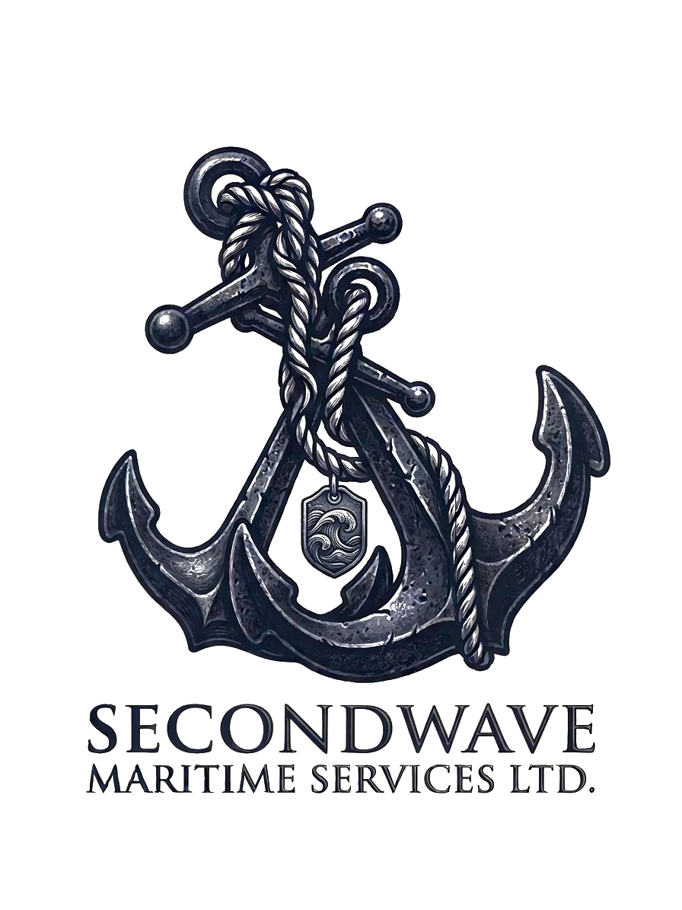

Maritime Services Ltd
Reliable Maritime Solutions for Nigeria's Offshore Future
“Building a modern, resilient marine support platform for offshore personnel transportation and vessel operations across Nigeria and the Gulf of Guinea.”
SecondWave Maritime Services Ltd is a Nigerian-owned maritime services company providing offshore personnel transportation, marine logistics, and vessel support operations across Nigeria's coastal and offshore zones, with a primary focus on the Niger Delta offshore corridor and the wider Gulf of Guinea.
The company is building a modern, resilient marine support platform that pairs safe and efficient crew transfer with protective escort and surveillance capability, in full compliance with applicable Nigerian maritime regulations and international industry standards.
Professional advisory, project support, compliance guidance and operational planning.
Efficient coordination of marine logistics and offshore support operations.
Support services for offshore energy projects and coastal marine operations.
Development and management of marine assets for offshore transportation and support.
Provision of vessel stores, supplies, consumables, and support equipment.
Marine escort and surveillance support in compliance with applicable regulations.
Professional maritime capacity development and industry-focused training programmes.
End-to-end coordination and management support for marine and offshore projects.
SecondWave Maritime Services Ltd is actively developing partnerships and vessel acquisition opportunities to support offshore personnel transportation and marine support services within the Nigerian maritime sector.
We are engaging industry stakeholders, technical advisors, marine operators, and vessel manufacturers to establish a sustainable and commercially viable marine operation serving offshore energy and maritime clients.
"To build a reliable Nigerian-owned maritime services company providing safe, efficient, and sustainable marine support to offshore and coastal industries."
Deep understanding of Nigerian maritime operations, port requirements, and the regulatory environment governing offshore activities.
Commitment to industry best practices, operational excellence, and full compliance with applicable Nigerian and international maritime standards.
Building lasting relationships with global maritime stakeholders, vessel manufacturers, and offshore industry operators for long-term value.
Focused on creating long-term value for clients, partners, and stakeholders through disciplined, sustainable operational development.